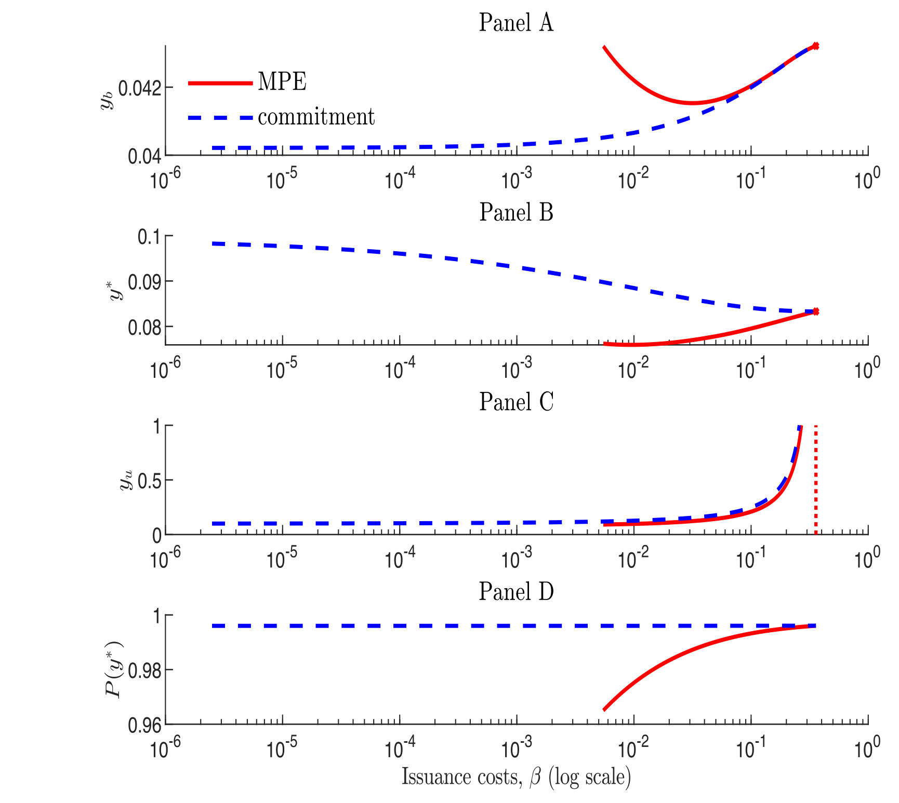
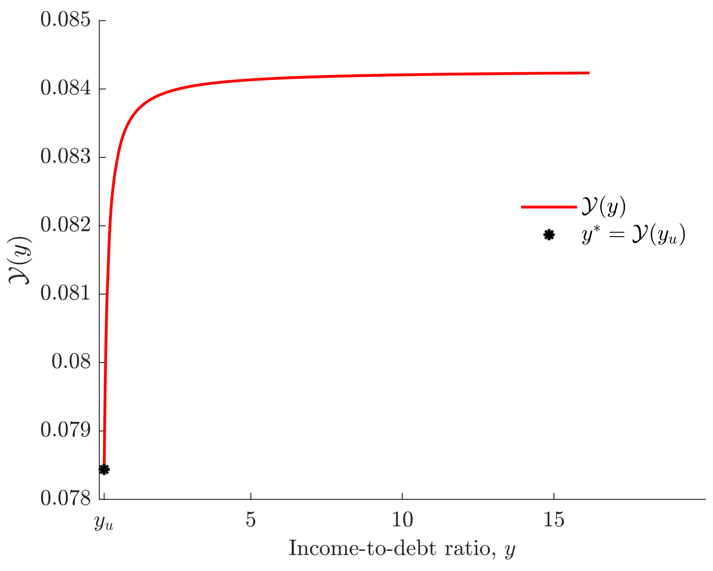
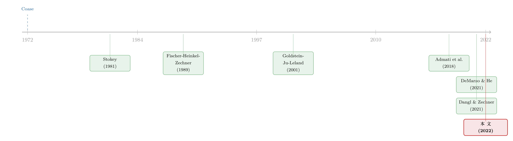

发债没有回头路：一点发行成本，如何替股东锁住了税盾
本文读的是 Benzoni, Garlappi, Goldstein & Ying (2022, JFE)：当一家公司无法对未来的发债政策做出承诺、又要为每次重组支付一笔固定成本时，这笔成本反而像一把「锁」，替股东挡住了自己过度发债的冲动，从而把债务的税盾重新留在了股东手里。更反直觉的是：当这笔成本趋近于零，存在一些债务期限，使股东能攫取几乎全部的现金流索取权。
1 一个让人不安的结论：没有承诺，税盾就归零
先讲一个干净却让人不太舒服的结论。
DeMarzo 和 He（2021）问了一个看似简单的问题：一家公司可以在任何时点继续发债，但它没法对「将来会怎么发」做出可信承诺，会发生什么？答案是——它会忍不住一直发。因为每多发一笔债，股东都能同时干两件事：一是多吃一点利息抵税的好处（税盾），二是稀释手里已有的老债主。债主当然不傻，他们预见到这种「将来还会被摊薄」的命运，于是在买债的当下就把价格压低。
于是出现了一个类似 Coase（1972）耐用品垄断者的困境：垄断者想慢慢卖高价，但买家知道他明天会降价，于是今天就不肯出高价，最终价格被一路压到边际成本。把「耐用品」换成「公司债」，结论是惊人的——在 DeMarzo 和 He 的无承诺均衡里，公司在所有状态下都在持续、近乎确定地发新债，哪怕已经濒临违约。这种激进到极致的政策，最后导致一个尴尬的结果：无论债务期限多长，税盾都恰好为零。承诺一旦消失，债务作为「税收武器」的全部价值也随之蒸发。
这就是本文的张力所在。现实里我们分明看到公司在持续地从债务中榨取税收好处——Graham 和 Harvey（2001）的调查里有 45% 的 CFO 明确把利息抵税列为重要考量。van Binsbergen 等（2010）、Korteweg（2010）也都实证测出了正的税盾。如果 DeMarzo–He 的逻辑是对的，那这些税盾从何而来？
一句话概括全文要解决的谜题：理论说「没有承诺 → 税盾归零」，现实却说「税盾明明存在」。本文要补上的，正是中间缺的那一块。
2 缺的那块积木：一笔固定的发行成本
接着，一个自然的问题是：DeMarzo–He 的世界里少了什么？
少了一个我们在数据里看得清清楚楚的东西——发债是要花钱的，而且这笔钱很大程度上是「固定」的。Leary 和 Roberts（2005）、Strebulaev（2007）、Morellec 等（2012）都记录到：公司并不频繁地调整资本结构，而是间歇性地、一次发一大笔。这种「不连续、大块头、低频率」的发债模式，正是固定发行成本（fixed issuance cost）留下的指纹。
本文的做法是：在一个标准的、连续时间的动态资本结构模型里，加入一笔正比于当期 EBIT 的固定重组成本 βY_t，然后老老实实地刻画无承诺下的马尔可夫完美均衡（Markov Perfect Equilibrium, MPE）。
这里有一个微妙但关键的直觉反转。我们通常把交易成本看成纯粹的摩擦、纯粹的坏事。但在「无承诺」的世界里，发行成本反而成了股东的朋友：正因为每次发债都要先掏一笔钱，股东才不敢像 DeMarzo–He 里那样无节制地连续发债。这笔成本于是充当了一个「承诺装置」（commitment device）——它替那个管不住自己手的管理层，挡住了过度发债的冲动。债主预见到公司不会太频繁地稀释自己，于是愿意出更高的价格，税盾也就回来了。
DeMarzo（2019）在其主席演讲里早已点明这一层：发行成本让公司「敲开债券市场的门」变贵，从而抑制了管理层过于激进地发债的欲望。本文把这个直觉，做成了一个可以求解、可以刻画的均衡。
3 模型：三个区域与一条「永不回购」的铁律
这是一篇理论论文，核心贡献在模型本身，所以我们把设定与最关键的推导一步步摆开。
环境。 所有人风险中性，贴现率 r > 0 外生。代表性公司的 EBIT 过程 Y_t 服从几何布朗运动：
$$ \frac{dY_t}{Y_t} = \mu\, dt + \sigma\, dW_t,\qquad \mu < r,\ \sigma > 0. $$
由于风险中性、且 μ < r，对 EBIT 索取权的价值就是一个简单的折现：
$$ V_t = \mathbb{E}_t\!\left[\int_t^\infty e^{-r(s-t)} Y_s\, ds\right] = \frac{Y_t}{r-\mu}. $$
因为 V_t 与 Y_t 线性相关，用谁当状态变量都一样，本文沿用文献惯例选 Y_t。
债务。 所有在外债券按连续利率 c 付息，并以速率 ξ 摊销——这意味着在不违约的前提下，债券的期望期限是 1/ξ。违约时债主回收为零。给定一个策略 (a)，单位面值债券的价格为
$$ P_t(a) = \mathbb{E}_t\!\left[\int_t^{\tau_b(a)} e^{-(r+\xi)(s-t)}(c+\xi)\, ds\right], $$
其中 τ_b(a) 是违约时点。注意指数式的摊销，正是「期望期限 1/ξ」这一刻画的来源。
股东的现金流。 EBIT 按公司税率 τ 纳税，利息可抵税。于是支付给股东的瞬时股利为
$$ \delta(F_s, Y_s) \equiv (1-\tau)Y_s - \big(c(1-\tau)+\xi\big)F_s. $$
没有承诺时，股东在算什么？ 这是全文最核心的方程。债主按「公司将采用马尔可夫策略 (a)」来给债定价，但管理层私下里可能偷偷换成另一套策略 (s)。此时股权价值是：
读懂这个方程，就读懂了整篇论文的张力：债主用 (a) 来定价 P_u(a)，而股东却按 (s) 来决定何时违约、何时发债。均衡要求二者重合——这正是 MPE 的定义：
$$ E_t(a,a) = \sup_{s\in\mathcal M} E_t(s,a),\quad t\ge 0. $$
也就是说，给定债主猜测的策略 (a)，股东的最优反应恰恰还是 (a) 本身，没有人想偏离。
第一块基石：永不回购。 本文证明的第一个性质，是把 Admati 等（2018）的「杠杆棘轮效应」（leverage ratchet effect）推广到了有固定成本的情形：
在任何属于 MPE 的策略里，股东永远不会回购债务。
直觉是三重的：回购会（i）在本该违约的状态下反而救活了公司，丢掉违约的期权价值；（ii）通过「反向稀释」把资源拱手让给债主；（iii）削减税盾。再加上固定重组成本让回购更不划算。于是搜索均衡的空间被大大缩小——我们只需在「纯发债」策略里找。
三个区域。 在所谓「障碍策略」（barrier strategy）下，整个故事由收入–负债比 y_t = Y_t/F_t 这一个状态变量驱动，落入三个区域：
y_t ≤ y_b：违约区，继续还债不如直接违约；y_t ∈ (y_b, y_u)：不动区，既不违约也不发债，安静地服务存量债务；y_t ≥ y_u：重组区，立刻发债，使发完之后的y一步跳回不动区。
对 y_t = Y_t/F_t 用伊藤引理（在不动区，面值按 dF/F = -ξ dt 摊销），可得本文的式 (5)：
$$ dy_t = y_{t-}\big[(\mu+\xi)\, dt + \sigma\, dW_t\big] + \big(Y(y_{t-}) - y_{t-}\big)\mathbf{1}_{\{y_{t-}\ge y_u\}}. $$
第一项是连续部分——注意漂移是 (μ+ξ)，比 EBIT 的 μ 多出一个 ξ，因为面值在不断摊薄分母；第二项是跳跃部分，只在进入重组区时被触发，把 y 从 [y_u,∞) 一步拉回 (y_b, y_u)。
真正的技术难点在哪？ 本文反复强调，与「必须先赎回全部老债才能发新债」的传统假设（Fischer 等 1989；Goldstein 等 2001；Strebulaev 2007 等大多数文献）不同，这里不要求公司先清空老债。这一步看似微小，却让问题难了一个量级：在传统设定里，每次发债都是在「零存量债务」的干净状态下做的，重组目标退化成一个点；而这里，重组目标是一个定义在整个重组区上的函数 Y(y_t): [y_u,∞) → (y_b, y_u)。要证明 MPE 存在，必须处理所有偏离均衡路径（off-equilibrium）的 y_t ∈ (y_u, ∞)，并给出发债确实最优的充要条件。这是本文方法论上最硬的贡献。
（关于「在外债务一直在动、而非每次清零重发」这条思路对信用风险的含义，可参见《债，其实一直在动：当「随机发债」补全了信用风险的另一半》。）
4 反转：成本太低，均衡反而消失了
然后，本文做了一件耐人寻味的事——把发行成本从高往低一路调下去，看均衡怎么变。
第一段：成本太高，干脆不发。 对给定的期限，存在一个发行成本阈值，高于它，发债的成本现值超过了新增净税盾的现值，于是股东选择永不发债。这一段平淡无奇。
第二段：成本适中，承诺装置生效。 低于这个阈值，MPE 出现了，公司间歇性地一次发一大笔债，股东攫取到正的税盾，其量级随期限变化。这正是「发行成本作为承诺装置」的核心区域。而且关键的对账结果是：当把模型校准到符合经验观察的债务期限与发行成本时，无承诺政策能拿到的税盾，只比有承诺的基准政策略低一点点。这一结论非常有分量——它告诉我们，现实中「不能承诺」这件事，对税盾的损害可能远没有 DeMarzo–He 的极端结论那么可怕。

Figure 2: also shows that the no-commitment results are
第三段：成本再低，反而崩了。 这是最反直觉的一段。继续往下调成本，会越过第二个阈值，低于它，障碍策略下的 MPE 不再存在。
为什么？按理说成本越低，越接近「无摩擦」，承诺问题本该越轻才对。但本文揭示了一个「恶性循环」：滚动成本一低，管理层就更敢激进地发债；这压低了债主愿意支付的价格，从而压低了发债收入，进而压低了「让公司继续活着」的期权价值；于是管理层会在更高的 y 值上就选择违约（提前清盘）；债主预见到这一点，又进一步压低报价……如此循环往复，最终在障碍策略空间里找不到均衡。换句话说，存在一片参数区域，发行成本作为承诺装置彻底失效了。

Figure 4: shows that the tax benefit is zero at the bound-
最锋利的那一刀。 而当发行成本参数趋近于零（但仍为正）时，本文证明：存在一些债务期限，使股东能攫取接近 100% 的公司现金流索取权——无论有没有承诺都是如此。这是一个极其强的结论：哪怕只有任意小的发行成本，股东「无法承诺」这件事对税盾的实际影响，也可能小到可以忽略。一点点摩擦，就足以把几乎全部的蛋糕留给股东。
5 文献脉络
这篇论文站在一条横跨半个世纪的脉络上。
最上游是 Coase（1972）和 Stokey（1981）——耐用品垄断者无法承诺未来不降价，于是被自己的「未来的自己」吃掉了租金。把这套「时间一致性」的逻辑搬进资本结构，就成了「公司无法承诺未来不发债」的问题。
接着是动态资本结构的经典三部曲：Fischer、Heinkel 和 Zechner（1989）开了动态调整的先河，Goldstein、Ju 和 Leland（2001）用 EBIT 模型证明了在有承诺、可赎回永续债的设定下，公司能榨取正的税盾——这正是本文用来对照的「有承诺基准」。

然后是把「承诺」这根支柱抽掉的两篇近作。Admati、DeMarzo、Hellwig 和 Pfleiderer（2018）给出了「杠杆棘轮效应」——股东一旦发了债就不肯回购。DeMarzo 和 He（2021）则把无承诺推到极致，得出「税盾归零」的 Coase 式结论。Dangl 和 Zechner（2021）从另一个角度研究了发行成本与期限的相互作用。Malenko 和 Tsoy（2020）在无重组成本下找到了 Markov 类之外的时间一致政策。
本文所处的位置很清楚：它是第一篇在「债务发行有固定成本、且公司无需先赎回全部老债」的设定下，正式刻画 MPE 的论文。它接住了 DeMarzo–He 那个令人不安的结论，并用一笔现实中本就存在的固定成本，把税盾重新「救」了回来。
（关于「承诺」与债务期限如何相互纠缠、短债又如何反过来约束发行人的另一条思路，可参见《中间商管不住自己的手——为什么「短债」反而治好了银行的食言》 与《飞机要换，债也要「换」：把「期限匹配」拆回资本的年龄》。）
6 评论与延伸（Q&A + 研究方向）
(a) 几个可能的疑问
Q：这篇和 DeMarzo–He（2021）到底差在哪一个零件上？
只差一个固定发行成本
βY_t。DeMarzo–He 是连续、无成本调整，结论是「所有状态都发债、税盾为零」；本文加入固定成本后，发债变成间歇性的大块头动作，税盾因此为正。可以说本文是把 DeMarzo–He 当成「成本趋零」的极限基准来对照的。
Q：为什么固定成本反而是「好事」？这违反直觉。
在能承诺的世界里，成本当然是纯摩擦。但在无承诺的世界里，问题不是「成本太高」，而是「股东太冲动」——管理层会过度发债稀释债主。固定成本相当于给这只「闲不住的手」上了一道锁，债主因此敢出更高的价，税盾被留了下来。坏摩擦在坏世界里成了好东西。
Q：「永不回购」这条铁律可信吗？现实里公司明明会回购债。
模型说的是「在 MPE 这一类均衡策略里」永不回购，前提是回购按市场价、且债主已理性定价。它捕捉的是杠杆棘轮效应的核心张力，而非否认现实中一切回购——现实中的回购往往出于税收、要约收购、契约或重新谈判等模型之外的动机。
Q：「成本越低、均衡反而消失」是不是模型的人为产物？
它确实是「障碍策略」这一类（单障碍 MPE）内部的非存在性结论，而非整个博弈无均衡。本文第 4 节专门讨论了单障碍 MPE 的缺失。这提示我们：在低成本区，时间一致的均衡可能需要更复杂（如非马尔可夫、声誉型）的结构来支撑，正如 Malenko 和 Tsoy（2020）所探讨的。
Q：「股东能攫取近 100% 现金流索取权」是不是太极端？
这是「成本趋零 + 特定期限」下的极限陈述，刻画的是一个理论上限，而非典型校准下的常态。它的意义在于警示：无承诺并不必然摧毁税盾，恰恰相反，在某些期限上，无承诺反而让股东几乎拿走了一切。
Q：模型对实证有什么可检验的含义？
模型直接生成了几个与数据吻合的特征：发债是离散、大块、低频的；杠杆有持续性；盈利能力与杠杆负相关（在不动区，EBIT 升高抬高股权价值而面值不变，杠杆自然下降）。这些与 Titman 和 Wessels（1988）、Frank 和 Goyal（2014）、Leary 和 Roberts（2005）的发现一致。
(b) 几个可能的研究问题与提案
1. 把「无承诺税盾」搬到公司债横截面上去检验。
【经济故事】模型预言：发行成本越低、期限结构越某种特定形态的公司，无承诺导致的税盾损失越小、甚至几乎为零。这是一个可以拿到信用利差和发行频率数据上去检验的横截面含义。 【可行性】中。需要 Mergent FISD 的逐笔发行数据 + Compustat 杠杆 + 估算的发行成本（承销费）。识别难点在于把「发行成本」与「期限」从内生的资本结构选择里拆出来，可能需要承销费的外生变动（如 Kim 等 2008 用到的制度变化）作工具。
2. 外资债权人会改变「承诺装置」的强度吗？
【经济故事】本文的承诺机制依赖债主理性预见未来稀释并据此定价。如果债权人结构里外资占比很高，而外资对发行人的监督、信息或法律救济较弱，那么「债主的反制」可能更弱，棘轮效应可能更强、税盾被攫取得更多。 【可行性】中–低。需要债券层面的持有人国别数据（如 TIC、Morningstar 持仓）。识别上要小心：外资持有本身可能与公司质量内生相关，需要 index inclusion 之类的需求侧冲击做外生变动。这与我手头关于外资债权人与公司债流动性的研究方向天然契合。
3. 流动性折价是否会放大「恶性循环」？
【经济故事】本文的恶性循环靠「债主压价 → 发行收入下降 → 期权价值下降 → 提前违约」驱动。如果新债在二级市场上还面临流动性折价（He–Milbradt 式的内生流动性），压价会被进一步放大，非存在区域可能更大。 【可行性】中。可在本文模型上叠加一个二级市场流动性折价项做数值实验，再用公司债换手率/价格冲击数据做间接检验。纯理论扩展 doable，实证对接较难。
4. 把固定成本换成「半固定 + 半比例」，看承诺装置的稳健性。
【经济故事】现实发行成本既有固定部分也有比例部分（Altınkılıç 和 Hansen 2000）。本文证明纯比例成本下税盾仍为零（沿用 DeMarzo–He）。一个自然的问题是：固定成分要占多大比重，承诺装置才开始生效？ 【可行性】高。这是纯粹的模型比较静态练习，在现有框架内即可完成，且能给出「最小固定成本份额」这一可校准的门槛。
5. 契约条款作为「显式承诺」与发行成本的替代关系。
【经济故事】Roberts 和 Sufi（2009）指出公司可用限制性契约来约束未来发债。契约（显式承诺）与发行成本（隐式承诺）是替代还是互补？当发行成本进入非存在区域时，公司是否更可能转向写紧契约？ 【可行性】中。需要债券契约条款数据（如 DealScan/契约数据库）+ 发行成本估计。识别上可看「发行成本外生下降」事件后契约严格度的变化。
7 参考文献
我的判断。 本文的贡献是干净而扎实的：它在一个比以往都更贴近现实（无需先赎回老债）的设定下，给出了无承诺 MPE 的正式刻画，并用一笔人人都观察得到的固定成本，回答了「没有承诺、税盾为何仍存在」这个真问题。最漂亮的是那个非单调的结构——成本太高不发、适中则承诺装置生效、太低反而崩溃——它把「摩擦是好是坏」这个老问题讲出了新意。
对识别（这里其实是对模型稳健性）的担忧有三：其一，全部结论建立在「障碍策略 / 单障碍 MPE」这一类之上，低成本区的非存在性很可能只是说明需要更宽的策略类（非马尔可夫、声誉型），而非真的无均衡；其二，「回收为零」「风险中性」「固定成本正比于 EBIT」这些设定都很省力，但也都需要稳健性检验，尤其是回收率非零会如何改变三区域结构；其三，模型是规范性的，离可证伪的实证含义还有一段距离。
我接下来最想看到的，是把这套「发行成本即承诺装置」的逻辑，对接到公司债的持有人结构与二级市场流动性上去——当债主是被动的外资、或新债面临流动性折价时，那把「锁」究竟是更紧了还是更松了。
- Admati, A.R., DeMarzo, P.M., Hellwig, M.F., Pfleiderer, P. (2018). The leverage ratchet effect. Journal of Finance 73(1), 145–198.
- Altınkılıç, O., Hansen, R.S. (2000). Are there economies of scale in underwriting fees? Evidence of rising external financing costs. Review of Financial Studies 13, 191–218.
- Coase, R.H. (1972). Durability and monopoly. Journal of Law and Economics 15(1), 143–149.
- Dangl, T., Zechner, J. (2021). Debt maturity and the dynamics of leverage. Review of Financial Studies 34(12), 5796–5840.
- DeMarzo, P.M. (2019). Presidential address: collateral and commitment. Journal of Finance 74(4), 1587–1619.
- DeMarzo, P., He, Z. (2021). Leverage dynamics without commitment. Journal of Finance 76(3), 1195–1250.
- Fischer, E.O., Heinkel, R., Zechner, J. (1989). Dynamic capital structure choice: theory and tests. Journal of Finance 44(1), 19–40.
- Goldstein, R., Ju, N., Leland, H. (2001). An EBIT-based model of dynamic capital structure. Journal of Business 74(4), 483–512.
- Graham, J.R., Harvey, C.R. (2001). The theory and practice of corporate finance: evidence from the field. Journal of Financial Economics 60(2–3), 187–243.
- Leary, M.T., Roberts, M.R. (2005). Do firms rebalance their capital structures? Journal of Finance 60(6), 2575–2619.
- Malenko, A., Tsoy, A. (2020). Optimal time-consistent debt policies. Working paper.
- Morellec, E., Nikolov, B., Schürhoff, N. (2012). Corporate governance and capital structure dynamics. Journal of Finance 67(3), 803–848.
- Stokey, N.L. (1981). Rational expectations and durable goods pricing. Bell Journal of Economics 12, 112–128.
- Strebulaev, I.A. (2007). Do tests of capital structure theory mean what they say? Journal of Finance 62(4), 1747–1787.